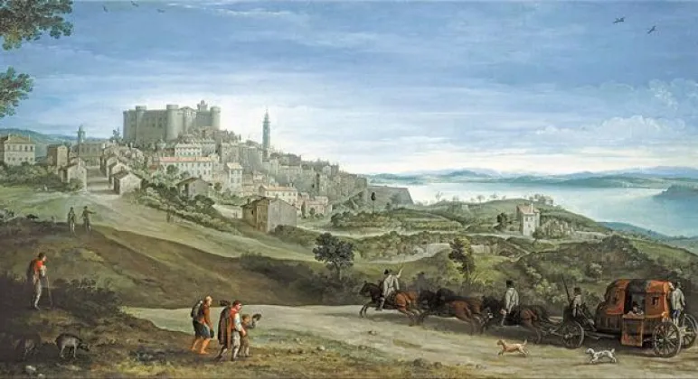

<!DOCTYPE html>
<html lang="en" x-data="{ menuIsOpen:false }"></html>
<head>
    <meta charset="UTF-8">
    <meta http-equiv="X-UA-Compatible" content="IE=edge">
    <meta name="viewport" content="width=device-width, initial-scale=1.0">
    <title>Accueil</title>
    <link rel="stylesheet" href="src/styles.css">
    <script defer src="https://unpkg.com/alpinejs@3.x.x/dist/cdn.min.js"></script>
    <script defer src="https://unpkg.com/alpinejs%22%3E"></script>
    <style>
        .menu {
            position: fixed;
            top: 0;
            left: 0;
            width: 100vw;
            height: 100vh;
            background-color: #767676;
            display: grid;
            place-content: center;
        }
        .header_menuBtn {
            position: relative;
            z-index: 10;
        }
          .noscroll,
          .noscroll body {
            overflow: hidden;
        }
    </style>
</head>
<body>
    <header>
        <a href="./index.html">
            
        </a>
        <button class="header_menu btndumenu" @click="menuIsOpen = ! menuIsOpen">
            
        </button>
        <nav id="mainNav" x-show="menuIsOpen" x-transition.duration.800ms class="menu">
    
            <button class="icon_cross_menu imgcross" @click="menuIsOpen = ! menuIsOpen">
                
            </button>
            <h1 class="textmenu">Menu</h1>
            <ul>
                <li class="header_text"><a href="./fr/exposition.html" style="color: #FFFFFF">Exposition</a></li>
                <hr>
                <li><a href="./fr/mouvement_artistique.html" style="color: #FFFFFF">Mouvement artistique</a></li>
                <hr>
            <ul class="ululul"> 
                <a href="./fr/contact.html" style="color: #FFFFFF" class="gac">Contact</a>
                <hr>
            </ul>
            <ul>
                <a href="./index.html"></a>
                <a href="./indexGB.html"></a>
            </ul>
        </nav>         
    </header>
</head>
<body>
    <h1 class="h1title">Accueil</h1>
    <hr>
        <p>
            Bienvenu sur baroque expo, l'exposition auquel vous devriez assister 
            si vous vous intéressez au mouvement baroque. 
        </p>

            <p>
                L'exposition aura lieu du 13 avril au 23 juin 2021.
                Tous les jours de 11h à 20h, sauf le lundi.
                L'adresse est la Fondation Cartier, 261 Bd Raspail, 75014 Paris.
            </p>
                <p>Le mouvement artistique de l'exposition est le mouvement baroque.</p>
                    <p>Les œuvres qui seront présentes ont toutes une page dédié.</p>
                    <p>Voici ces 2 œuvres.</p>
                    <figure>
                        
                        <figcaption>The Embarkation of a Queen,  Agostino Tassi</figcaption>
                    </figure>
                    <figure>
                        
                    <figcaption>A view of bracciano, Paul Bril</figcaption>
                    </figure>
                    
                    <hr>
                <p>
                    Le mouvement artistique de notre exposition sera le mouvement baroque. 
                    En savoir plus sur toutes les œuvres qui seront présente. Et aussi 
                    l'histoire du mouvement et de ces œuvres.
                </p>
                <button class="btn1">En savoir plus</button>
                <hr>
                <p>Les œuvres de ces artistes seront présentes.</p>
                "carrousel"
                <hr>
                <p>
                    Vous pouvez naviguer sur ce site pour découvrir les œuvres qui seront 
                    exposer lors de notre exposition.  
                    Et pour accéder à la billetterie.
                </p>
                <button class="btn2">Billetterie et exposition</button>
                <hr>
                <p>Pour toutes les informations complémentaires veuillez passer par la page contact.</p>
                <button class="btn3">Contact</button>

            <footer>
                <div class="logo__texte_ms">
                    
                    <h3 class="h3footer" class="created_by_footer"></h3>
                </div>
                <p class="pfooter">Mention légale</p>   
                <p class="pfooter">Contact</p> 
                <p class="pfooter">Fondation Cartier,</p>
                <p class="pfooter">261 Bd Raspail, 75014 Paris</p>      
                <h4 class="h4footer">Suivre l'exposition</h4>
                <div class="icon">
                    <div class="icon_facebook"><a href=""></a></div>
                    <div class="icon_twitter"><a href=""></a></div> 
                    <div class="icon_instagram"><a href=""></a></div>     
                    <div class="icon_youtube"><a href=""></a></div>     
                </div>               
                    <p class="pfooter">Ce projet a été réaliser dans le cadre d'un exercice pédagogique au 
                    <a href="http://mmimontbeliard.com/" style="color: #56A99F" class="footer_link" target="_blank">département MMI de Montbéliard</a></p>
                    <p class="pfooter">Université Nord Franche-Comté</p>
                    <a href="http://mmimontbeliard.com/" style="color: #56A99F" class="footer_link" target="_blank">IUT MMI Montbéliard</a></p>
                    
            </footer>        
</body>
</html>